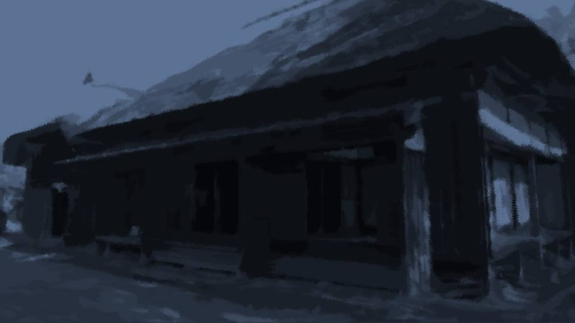
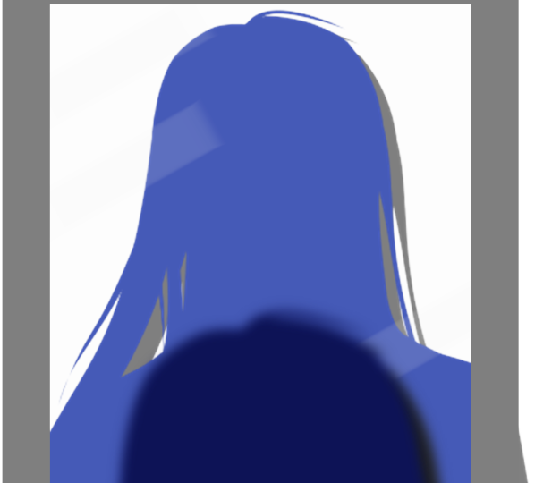

A Mother's 'Aura'
No wonder I felt worn out. I'd been with Auntie for three whole hours.
It probably wasn't just Auntie's shrill voice that wore me out. It was that she'd almost seen to the bottom of my heart.
It probably wasn't just Auntie's shrill voice that wore me out. It was that she'd almost seen to the bottom of my heart.


I threw myself onto the bed.
It was a nice day, so I'd wanted to hang my futon out to air, but unfortunately the sky over my heart was no weather for airing futons.
I took out my phone and called the second name in my call log.
It was a nice day, so I'd wanted to hang my futon out to air, but unfortunately the sky over my heart was no weather for airing futons.
I took out my phone and called the second name in my call log.
"Mm... Hello, Hana-chan?
Yeah, it turns out today doesn't really work for me...
I'm really sorry to cancel at the last minute, but...
Yeah... sorry..."
In the end, I passed on tonight's drinking party.
The weather in my heart was that bad today.
In the end, I passed on tonight's drinking party.
The weather in my heart was that bad today.
Mom died 10 years ago.
Ever since, cherry blossoms and blood have danced through every spring of mine.
Ever since, cherry blossoms and blood have danced through every spring of mine.
 video: 桜.wmv
video: 桜.wmvNine years ago, I think it was... Shirozaki-san's wife.
Mrs. Shirozaki, trying to turn Dad in to the police, and Shirozaki-san, trying to stop her.
One night, when I'd gone out into our yard, I faintly heard the Shirozakis quarreling.
Mixed in with their angry shouting were Dad's and Mom's names.
I snuck into the yard of the Shirozaki house.
Mrs. Shirozaki, trying to turn Dad in to the police, and Shirozaki-san, trying to stop her.
One night, when I'd gone out into our yard, I faintly heard the Shirozakis quarreling.
Mixed in with their angry shouting were Dad's and Mom's names.
I snuck into the yard of the Shirozaki house.

video: 桜.wmv"Yuriko, calm down. It's true that Kotaro-kun is in a position that easily draws suspicion.
That's exactly why we need to be a little more―"
"What are you talking about!? Grand Witch-sama is trying to settle it right here without even calling the police―don't you find that suspicious!? It means the Niimura family is covering for whoever killed Sakura-chan, doesn't it!?"
"What are you talking about!? Grand Witch-sama is trying to settle it right here without even calling the police―don't you find that suspicious!? It means the Niimura family is covering for whoever killed Sakura-chan, doesn't it!?"
video: 桜.wmv"But there wasn't any proof that Kotaro-kun did it!
Kotaro-kun himself knows full well that he's under suspicion!"
"Then tomorrow I'm going to the police. I'll have outsiders take a proper look."
"You mean to bring outsiders in!?"
"Then tomorrow I'm going to the police. I'll have outsiders take a proper look."
"You mean to bring outsiders in!?"
video: 桜.wmv"Do you want to live in the same settlement as a murderer?"
That's the conversation, as far as I dimly remember it.
Mrs. Shirozaki was trying to turn Dad in to the police.
That's the conversation, as far as I dimly remember it.
Mrs. Shirozaki was trying to turn Dad in to the police.
I had seen with my own eyes the moment Dad cut off Mom's head.

I'd seen it on a TV drama once.
Even with a dead body, cutting it up or dumping it was a crime.
Which meant that tomorrow the police would come, and Dad would be arrested...
For me at 11, it was a cruel thing to face.
Even with a dead body, cutting it up or dumping it was a crime.
Which meant that tomorrow the police would come, and Dad would be arrested...
For me at 11, it was a cruel thing to face.
 video: 桜.wmv
video: 桜.wmvFor hands like mine, killing a middle-aged woman on the spot was no hard thing.
In the middle of the night, when everyone was asleep, I slipped silently into the Shirozaki house and drove a knife into her throat.
That alone was enough to keep the police from taking Dad away.
Nobody so much as suspected that an 11-year-old child had done it.
In the middle of the night, when everyone was asleep, I slipped silently into the Shirozaki house and drove a knife into her throat.
That alone was enough to keep the police from taking Dad away.
Nobody so much as suspected that an 11-year-old child had done it.
video: 桜.wmvEven so, suspicion kept falling on Dad.
Every year, just one.
I timed them to Arata's own strange phenomenon of people dying in April.
At some point, it came to be called the curse-killings.
The people I killed: five in all― in the springs of Shiyo 791 through 795.
In Shiyo 795 Dad's confinement in the meeting hall ended, and Dad was finally cleared of suspicion as well.
Every year, just one.
I timed them to Arata's own strange phenomenon of people dying in April.
At some point, it came to be called the curse-killings.
The people I killed: five in all― in the springs of Shiyo 791 through 795.
In Shiyo 795 Dad's confinement in the meeting hall ended, and Dad was finally cleared of suspicion as well.
video: 桜.wmvBut things were taking a turn for the worse.
 video: 桜.wmv
video: 桜.wmvBy then, with suspicion feeding on itself over who would be killed each April, the settlement had sunk into a place where all the residents suspected one another.
On the surface they all say 'all for one, one for all,' but what they think inside―
The curse-killings from Shiyo 796 on are what laid it bare.
On the surface they all say 'all for one, one for all,' but what they think inside―
The curse-killings from Shiyo 796 on are what laid it bare.
video: 桜.wmvI don't know who caused the curse-killings from Shiyo 796 on.
It's true that I was the one who started the curse-killings.
I killed five people with these hands.
My heart, which committed murder in those impressionable years from 11 to 15― never cleared up, not once in all that long, long time.
In time, the storm in my heart swallowed the Arata settlement, and the settlement is still adrift in a storm that shows no sign of ending.
It's true that I was the one who started the curse-killings.
I killed five people with these hands.
My heart, which committed murder in those impressionable years from 11 to 15― never cleared up, not once in all that long, long time.
In time, the storm in my heart swallowed the Arata settlement, and the settlement is still adrift in a storm that shows no sign of ending.
video: 桜.wmvIf I came forward and admitted I was the culprit, would the curse-killings end?
That probably wouldn't work.
The curse-killings after Dad's confinement ended happened without my hand in them.
There's no way the suspicion feeding on itself will just disappear.
That probably wouldn't work.
The curse-killings after Dad's confinement ended happened without my hand in them.
There's no way the suspicion feeding on itself will just disappear.
video: 桜.wmvBesides, if anyone learned what led me to start the curse-killings, what would become of Dad and Grandma?
I can't leave Kana all alone.
I was foolish.
No. I am foolish.
To think a killing that was only meant to get me through the moment would end up like this.
I can't leave Kana all alone.
I was foolish.
No. I am foolish.
To think a killing that was only meant to get me through the moment would end up like this.
video: 桜.wmvBut it's too late now. I killed five people to protect my family.
All I did was shake off the ones in my way, who suspected Dad and tried to tear my family apart.
It's just that where I shook them off to happened to be an abyss.
They just fell into the abyss and died.
All I did was shake off the ones in my way, who suspected Dad and tried to tear my family apart.
It's just that where I shook them off to happened to be an abyss.
They just fell into the abyss and died.

―My phone vibrated.
It was a message from Auntie.
It was a message from Auntie.
"Sending you the photos of Natsumi-chan and Goto-chan from Motoki-cho (^-^)"
She'd agreed to send me photos so I'd know what kind of girls were coming.
She'd agreed to send me photos so I'd know what kind of girls were coming.

This girl was Erina Goto, the one she'd shown me earlier too.
Apparently she'd be starting high school in April, but she really was small for that.
Looking at her again, she was a really cute girl, like a doll...
In that face, still young, I sensed a dignified sharpness of some kind.
Just as Auntie said, she must be a clever girl.
Apparently she'd be starting high school in April, but she really was small for that.
Looking at her again, she was a really cute girl, like a doll...
In that face, still young, I sensed a dignified sharpness of some kind.
Just as Auntie said, she must be a clever girl.
And this girl...

............!?
What? This girl...
What? This girl...
Most likely, this girl was Natsumi Kogori.
The moment I saw this girl's face, I felt every sweat gland in my body burst open.
This girl... was exactly like Mom.
No, her face was completely different, and I knew she was someone else.
But how should I put it?
The moment I saw this girl's face, I felt every sweat gland in my body burst open.
This girl... was exactly like Mom.
No, her face was completely different, and I knew she was someone else.
But how should I put it?
If this girl stood behind me and I was asked "Who's behind you?", I would answer "Mom" without a doubt.
In this girl, whose looks and air were completely different, I was sensing something that led back to Mom...
In this girl, whose looks and air were completely different, I was sensing something that led back to Mom...

I opened the window and stood in front of the full-length mirror.
Through the window came a wind that had blown across the land under a cloudless sky.
When I closed my eyes and breathed in deeply, I caught the faint scent of spring.
Yeah... this season was almost here.
I opened my eyes and met my own gaze.
Through the window came a wind that had blown across the land under a cloudless sky.
When I closed my eyes and breathed in deeply, I caught the faint scent of spring.
Yeah... this season was almost here.
I opened my eyes and met my own gaze.
"Hah...! Hah...!"
I couldn't steady my body, heaving for breath, and dropped to my knees.
This year too―this year too, this season had come.
I hadn't told anyone about this.
Still breathing hard, I looked my own face in the eye once more.
I couldn't steady my body, heaving for breath, and dropped to my knees.
This year too―this year too, this season had come.
I hadn't told anyone about this.
Still breathing hard, I looked my own face in the eye once more.

My face was starting to look like Mom's.
And this blue eye, and this green eye.
Even if the blue eye was inherited from Mom, where did the green eye come from?
Kana has the same odd eyes as me, one blue and one green.
And this blue eye, and this green eye.
Even if the blue eye was inherited from Mom, where did the green eye come from?
Kana has the same odd eyes as me, one blue and one green.
Since coming to Tokyo, I get told this a lot.
That odd eyes, one blue and one green, are really beautiful.
I'm glad when people compliment me like that.
But a friend of mine once said something.
That a Japanese person with odd eyes, one blue and one green, has probably never been seen before.
That odd eyes, one blue and one green, are really beautiful.
I'm glad when people compliment me like that.
But a friend of mine once said something.
That a Japanese person with odd eyes, one blue and one green, has probably never been seen before.
 video: 桜散る.wmv
video: 桜散る.wmvI have the ability to foresee danger at this time of year.
What's more, I don't have the condition Mom had, of needing a dark, narrow place.
What's more, I don't have the condition Mom had, of needing a dark, narrow place.
video: 桜散る.wmvWhen I was 10, at the same moment that power awoke in me, I was seized by an unbearable murderous intent.
It was a nightmare: if I didn't kill Mom, I would die.
It was a nightmare: if I didn't kill Mom, I would die.
video: 桜散る.wmvAnd then I had this year's first danger sense.
In the Arata settlement, I― will die.
It's not just me.
I saw many other people die too.
In the Arata settlement, I― will die.
It's not just me.
I saw many other people die too.
video: 桜散る.wmvI looked at the photo on my phone again.
Natsumi Kogori―someone whose 'aura' is so like Mom's.
Surely... it couldn't be...
That this person has precognition too...
But if, by some chance, she did, then the moment I came face to face with this girl, I might be seized by that murderous intent.
Natsumi Kogori―someone whose 'aura' is so like Mom's.
Surely... it couldn't be...
That this person has precognition too...
But if, by some chance, she did, then the moment I came face to face with this girl, I might be seized by that murderous intent.
video: 桜散る.wmvI'll ask Auntie about it, casually.
I'll say something about her seems like Mom, and ask if there's anything special about her.
No good... she probably won't answer that.
Because of the look in Auntie's eyes at the cafe earlier―
I'll say something about her seems like Mom, and ask if there's anything special about her.
No good... she probably won't answer that.
Because of the look in Auntie's eyes at the cafe earlier―
 video: 桜散る.wmv
video: 桜散る.wmv
It also seemed as if she was keeping back the real reason Natsumi Kogori was coming to Arata.
"If you're hiding something, don't pry into what I'm hiding."
I think that was the gist of it.
If so, what on earth is she hiding...?
Why keep secrets now, after coming this far...?
"If you're hiding something, don't pry into what I'm hiding."
I think that was the gist of it.
If so, what on earth is she hiding...?
Why keep secrets now, after coming this far...?
video: 桜散る.wmv............
I see... it adds up.
In the Arata settlement, precognition like Mom's had come to be called 'the witch's power' and shunned.
They made all the use of it they wanted while Mom was alive, and then the moment rumors started that it might be Mom's curse, this is how they treat it.
That's part of why I haven't told anyone about this power.
In the Arata settlement, precognition like Mom's had come to be called 'the witch's power' and shunned.
They made all the use of it they wanted while Mom was alive, and then the moment rumors started that it might be Mom's curse, this is how they treat it.
That's part of why I haven't told anyone about this power.
video: 桜散る.wmvIn other words, knowing that Natsumi Kogori has that power would put me on my guard.
Let me sort out the situation a little.
Let me sort out the situation a little.
video: 桜散る.wmvNatsumi Kogori may have precognition (the 'witch's power') like me and Mom.
There are two reasons―
・She feels like Mom (my own impression)
・Auntie is hiding something
And then the sight I saw just now, when I looked into the mirror.
There are two reasons―
・She feels like Mom (my own impression)
・Auntie is hiding something
And then the sight I saw just now, when I looked into the mirror.
video: 桜散る.wmvI am going to die.
Cut deep across the back on April 8, or cut clean in two.
Or else stabbed to death from behind by Haruka, turned green-eyed.
There seem to be a few branching points, but either way, I don't survive.
Cut deep across the back on April 8, or cut clean in two.
Or else stabbed to death from behind by Haruka, turned green-eyed.
There seem to be a few branching points, but either way, I don't survive.
video: 桜散る.wmvKnowing that, I can act to avoid death, but with death dogging me this closely, there's no guarantee I'll live through it.
This coming April 8, something is going to happen.
Something big, something the settlement's survival hangs on.
This coming April 8, something is going to happen.
Something big, something the settlement's survival hangs on.

 video: 111.wmv
video: 111.wmvStill, there's one thing I can be optimistic about.
There are almost no cherry trees in Arata, and the Niimura main house's cherry is withering too.
My precognition doesn't work in Arata anymore either.
In the same way, Natsumi Kogori's power will probably be sealed off too.
Thinking of it that way, as long as I'm in the Arata settlement, I shouldn't be seized by murderous intent either.
There are almost no cherry trees in Arata, and the Niimura main house's cherry is withering too.
My precognition doesn't work in Arata anymore either.
In the same way, Natsumi Kogori's power will probably be sealed off too.
Thinking of it that way, as long as I'm in the Arata settlement, I shouldn't be seized by murderous intent either.
video: 111.wmvSo what I can do now comes down to one of two things―
It's whether or not to get Auntie to tell me Natsumi Kogori's secret.
And that amounts to honestly telling Auntie everything I've done.
The curse-killings I caused in the past, and what Dad and the others did.
It's whether or not to get Auntie to tell me Natsumi Kogori's secret.
And that amounts to honestly telling Auntie everything I've done.
The curse-killings I caused in the past, and what Dad and the others did.
video: 111.wmvUnless I tell her that, Auntie probably won't answer my question.
Would Auntie accept what I've done, and protect my family?
If she would, it would mean burdening Auntie with the same sin as mine, though...
Would Auntie accept what I've done, and protect my family?
If she would, it would mean burdening Auntie with the same sin as mine, though...
video: 111.wmvWell, what do I do...
Confess my sins to Auntie?
Or keep my sins hidden to the end?
This is a very important choice.
Confess my sins to Auntie?
Or keep my sins hidden to the end?
This is a very important choice.
Read ✓ Next in this arc →